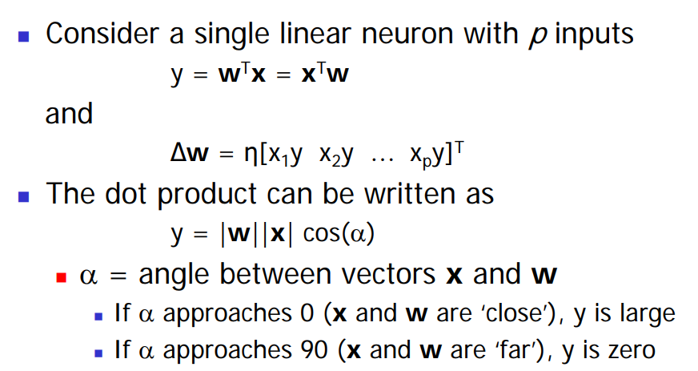
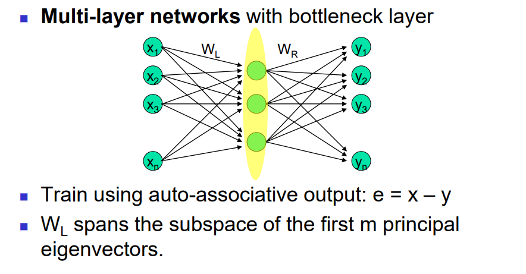
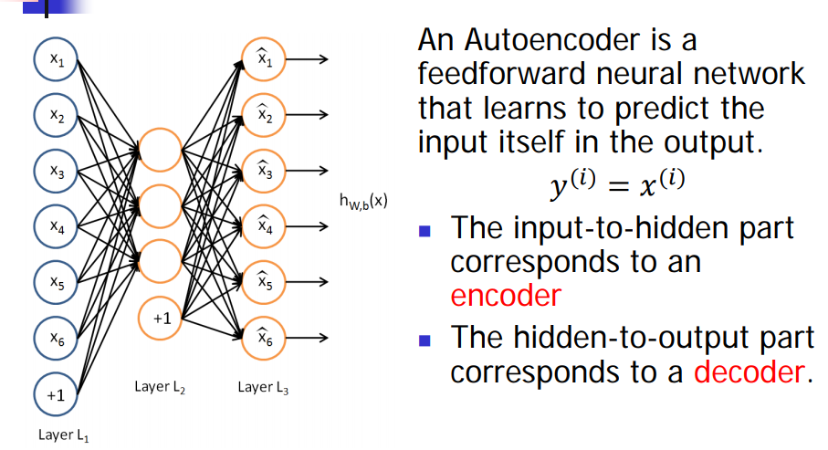

Lecture notes of 301 Lecture 13
Introduction
- We mainly studied neural networks that learn from their environmen in a supervised manner
- Neural networks can also learn in an unsupervised manner as well
- Unsupervised learning discovers significant features or patterns in the input data through general rules that operate locally
- Unsupervised learning networks typically consist of feed-forward connections and elements to facilitate local learning
Hebbian Learning
- A simple principle was proposed by Hebb in 1949 in the context of biological neurons
- Hebbian principle
- When a neuron repeatedly excites another neuron, then the threshold of the latter neuron is decreased, or the synaptic weight between the neurons is increased, in effect increasing the likelihood of the second neuron to excite.
- Hebbian learning rule Δwji = ηyjxi (learning rate * output * input)
- Consider the update of a single weight w (x and y are the pre- and post-synaptic activities)
w(n+1) = w(n)+ ηx(n)y(n) - For a linear activation function
w(n + 1) = w(n)[1 + ηx(n)xT(n) ]- Weights increase without bounds. If initial weight is negative, then it will increase in the negative. If i t is positive, then it will increase in the positive range
- Hebbian learning is intrinsically unstable, unlike error-correction learning with BP algorithm
- 
- A network trained with Hebbian learning creates a similarity measure (inner product) in its input space according to the information contained in the weights
- The weights capture (memorizes) the information in the data during training
- During operation, when the weights are fixed, a large output y signifies that the present input is similar to the inputs x that created the weights during training
Oja’s Rule
The simple Hebbian rule causes the weights to increase (or decrease) without bounds
Oja proves that, for small η<<1, the above normalization can be approximated as:< p>
- This is Oja’s rule, or the normalized Hebbian rule
- It involves a ‘forgetting term’ that prevents the weights from growing without bounds
It has been proved that, Oja’s rule converges asympototically, unlike Hebbian rule which is unstable
Oja’s rule creates a principal component in the input space as the weight vector when applied to a single neuron
PCA in Neural Networks

Using back-propagation for unsupervised learning
Try to make the output be the same as the input in a network with a central bottleneck
- The activities of the hidden units in the bottleneck form an efficient code
- The bottleneck does not have room for redundant features
- Good for extracting indepedent features.
- The activities of the hidden units in the bottleneck form an efficient code
BP algorithm can be used for unsupervised learning to discover significant features that characterise input patterns.
This can be achieved by learning the identity mapping, passing the data through a bottleneck: auto-encoders
Auto-encoders

- To reproduce the input patterns at output layer
- Number of hidden layers and the sizes of the layers can vary
- Auto-encoder tends to find a data description which resembles the PCA; while small number of neurons in the bottleneck layer of the diabolo network acts as an information compressor
Auto-encoders Network
- The network tries to reproduce the input in output, inducing ana short encoding in the hidden layer
- This encoding retains the maximum amount of information about the input in a smaller dimensional space such that the input can be reconstructed
- Auto-encoder networks can be used for dimensionality reduction, compression.